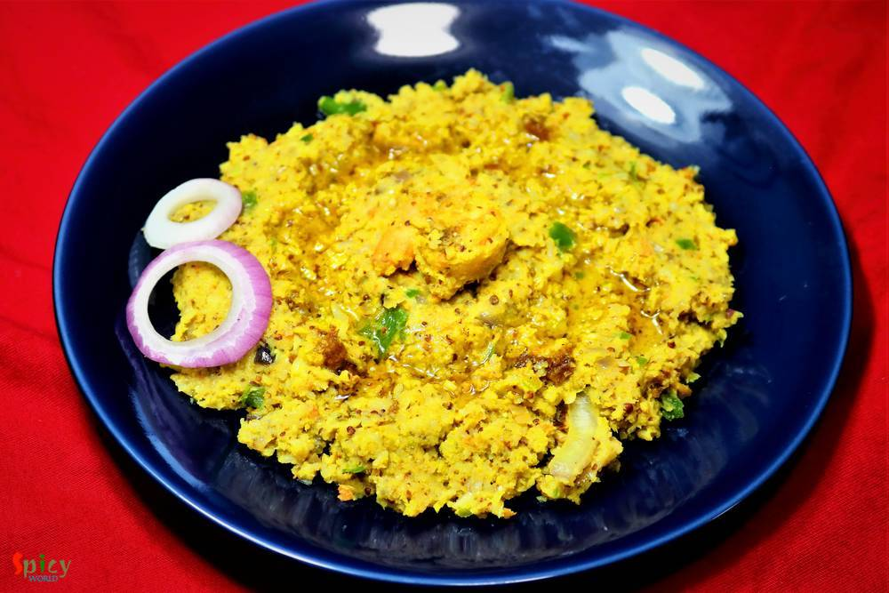
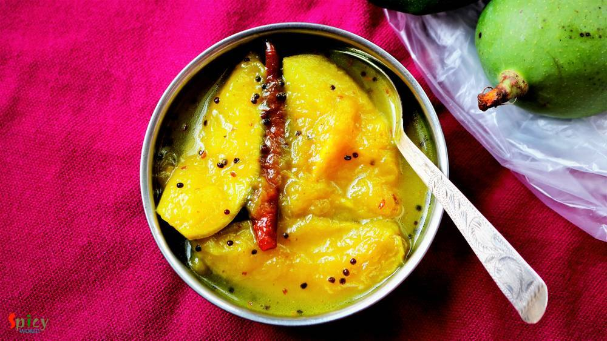

Simple and Easy Recipes

Nonveg Recipe
May 24, 2018
I am one true lover of rolls, be it an Egg roll or Chicken roll. I know many of you do also. But fact is it's always better to have home cooked food than consuming street food, here everyone has one common complain about that - taste is not the same yaar ! right ? Being a crazy fast food lover I can guarantee you that this is one top notch recipe of Butter Chicken Roll. I've combined two best idea ...


Nonveg Recipe
May 18, 2018
I have someone in my house who often demands to eat 'homemade-restaurant style' dinner in weekend ???. That's why last Sunday I had to make 'butter chicken' along with 'butter naan'. Nowadays 'butter chicken' is famous in all over the world. In Indian restaurants this is the mostly ordered dish. It has a tomato based, rich, velvety gravy and grilled, juicy chicken pieces. The combination was a tot ...

Veg Recipe
May 16, 2018
During summer Cold coffee is a must have. You can make this anytime and with minimum effort. My family is obsessed with it. I prepare this twice a week during summer. Do give this recipe a try and let me know how it turned for you.

Veg Recipe
May 15, 2018
This is a very popular recipe of mango: Mango Mastani. It has all sorts of goodness like mango pulp, fresh cream, vanilla ice cream and few other ingredients. I make this quite often in summer as it is very easy and effortless recipe. Do give this recipe a try and let me know how it turned out for you.

Nonveg Recipe
May 8, 2018
'Aam Kasundi' / Mango Mustard relish : the name itself is enough to make anyone's mouth watery, isn't it ? This delicious recipe of Chingri Mach (prawn) requires minimum time and effort to achieve its best taste. Fry everything in mustard oil and make a paste out of it ... perfect for summer ! Nobody likes to be in the kitchen for long in this hot weather. So go ahead, give this simple recipe a tr ...

Veg Recipe
May 3, 2018
Summer is here and so are the mangoes. Yesterday I went for grocery shopping and market was filled with raw mangoes (kancha aam). Off course I bought few and immediately a request came from him : can we have 'aamer chutney' tomorrow?? So, before thinking of any other recipes with raw mango I had to make this Bengali style Mango Chutney. The recipe is our family favorite. This version of mango chut ...

Nonveg Recipe
May 1, 2018
'Sobji diye Macher Jhol' is nothing fancy in Bengali households. But we people have crazy obsession about it. Tollywood made a movie named 'Macher Jhol' ! So, being a Bengali I had to share this recipe with you all. You can make so many variations of this dish. Today I made it without onion and garlic, but you can surely add them if you want. One can also skip the vegetable part. Do try this easy ...
 / Yogurt Pepper Chicken")
Nonveg Recipe
Apr 24, 2018
"Lajawab" is the only compliment about mom's recipe. My mom make this dish in a very easy and simple way. But it tastes delicious. You will need very few ingredients for this dish. This the best recipe for teenagers because its very easy to make.

Nonveg Recipe
Apr 17, 2018
Fried rice is everybody's favourite .. agree or not ? You can add whatever ingredient you have in your fridge and thats what happened with me. I had few veggies laying around, so thought why not throw everything with some rice. Best part of this idea - added some chicken strips. After around 10 minutes of stir frying a good wholesome Chicken fried rice was waiting for me to make my soul and tummy ...

Nonveg Recipe
Sep 20, 2016
I know it's been two weeks I didn't post anything due to settling down in India, but heyy now I am back with another interesting recipe from 'dhaba' gharana. Every place has their own style of dhaba / road side food joints. Whenever we plan any short trip within Bengal, we try to make the lunch stop at some popular Dhaba. Their 'torka-ruti' and 'chicken curry' with rice are must for us. I like the ...